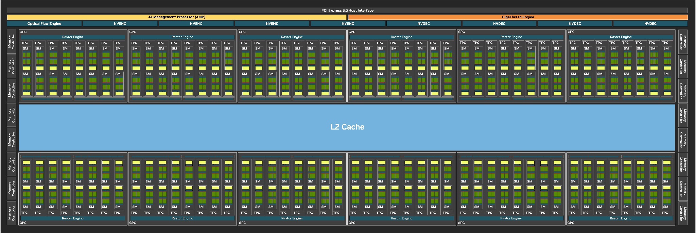
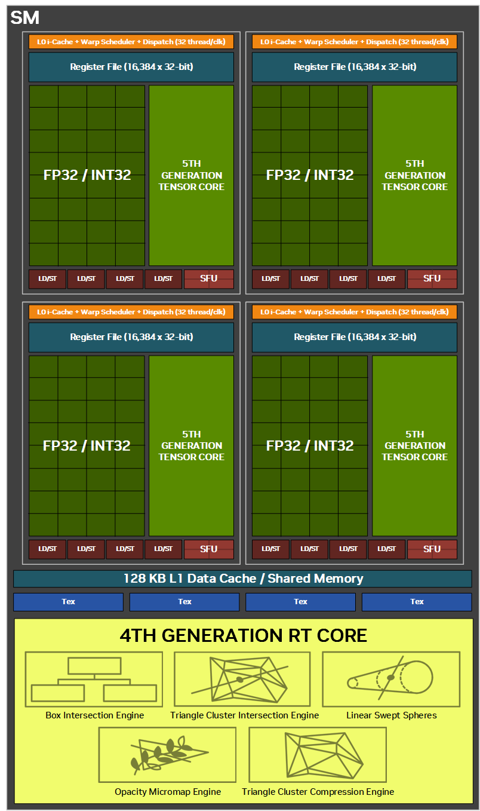
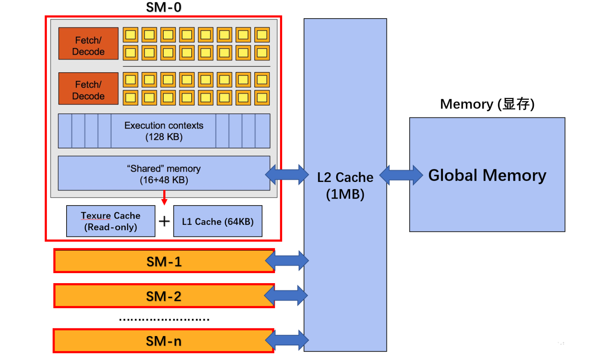

GPU-Architecture
GPU 架构
0.引言
GPU (Graphic Processing Unit)，原本作为图像处理的工具，为游戏的渲染服务，在AI时代因为其并行计算性而得到了大量的使用
Nvidia 正是看到了 AI 使用显卡进行训练的商机，搭建 CUDA 平台一飞冲天
最近看到 groq 使用的 LPU 带来的惊人的推理速度，想要了解一下它的架构，但是发现自己连现在的 GPU 架构也不是很了解，所以回炉重造一下
主要从两个方面入手：
- GPU 的硬件架构
- 编程模型
- Memory设计
最近上计算机系统上到了GPU，再来完善一点
1. 硬件架构（Hardware Architecture）
以最流行的 N卡为例，这是这 blackwall 架构的硬件结构。

从大到小，结构是这样的：
1 | GPU -> GPC (Graphics Processing Cluster) |
一张 GPU 最核心的单元就是 SM。可以看到下图中，一个 SM 中有 4 个子分区，每一个子分区都包含：
- 控制单元
- Warp Scheduler
- Dispatch Unit
- 计算单元
- CUDA cores
- Tensor core
- SFU (Special Funciton Unit)
- LD/ST
- 缓存单元
- L0 Instruction cache
- 存储单元
- Register

而在整个 SM 中，子单元会共用：
- Share Memory
- L1 cache
- L1 Instruction Cache
- Texture Unit
以上的这些有关 cache 的，在后面写
从硬件架构上，我们称之为SIMT架构，single instruction multiple threads
不难理解，就是一条指令会操纵多个线程，或者多个线程会运行同一条指令
2. 编程模型（Programming Model）
在编程模型中，由大到小的层级是
1 | Grid -> Block -> Warp -> Thread |
- Thread：GPU最基本执行单元，每个线程执行同一个函数，但处理不同数据
- Warp：
- 1 Warp = 32 Thread
- Warp 是调度的最小单位
- 同一个 Warp 内必须执行相同指令
- Block：
- 由多个线程组成
- 可以 1D / 2D / 3D
- Block 内的线程：
- 共享 Shared Memory / L1 cache
- Grid：
- 由多个 Block 组成
- Grid 之间的不同的 Block:
- 不能直接同步
- 不共享 shared memory
硬件架构和编程模型的映射联系如下图
一个 Grid 被扔给 GPU 处理，其中的 Block 被分配到不同的 SM 处理，block 中的 warp 则是被分给 SM 的子单元，最终 Thread 有单个 CUDA core 处理
GPU 遵循的是 SIMT（Single Instruction Multiple Threads模型，每个线程都有独立的寄存器，但是每个 Warp 内只执行相同的指令
举一个并行编程的例子：矩阵乘法
1 | //CPU 的三层循环 |
并行粒度设计：
- 一个线程负责计算 C 的一个元素
- 一个 Block 负责计算一个子矩阵（tile）
- 整个 Grid 覆盖整个输出矩阵
假设 Block = 16 * 16 Thread，即一个 Block 分配有 16 个 Warp ，这个 Block 负责了一个 16 * 16 的子矩阵（tile）；那么要让输出矩阵被完全覆盖，就需要 ceil(M/16) × ceil(N/16) 个 Grid
对于一个线程的索引，也就是它在矩阵中的真实的坐标
1 | row = blockIdx.y * blockDim.y + threadIdx.y |
得到索引后，Block 被分配给一个个 SM；每个 warp 执行同样的代码
1 | float sum = 0.0f; |
这样的设计称为是SPMD设计，Single-Program-Multi-Data
程序代码只有一个，但是它去操作不同的数据去完成了计算
3.Memory 设计

这张图很好的显示了 GPU 的 memory architecture
1 | Host (CPU DRAM) |
SM 内部
Register (SRAM)
每个线程私有
当一个block被分派到一个sm执行的时候，根据编译器的规则会静态预留，从reg池子里划分出所有线程中专属的reg
之所以需要这么多物理寄存器，首先是因为gpu有海量的线程，根据硬件规则 一个sm最多1024个线程 平均下来分配到16个寄存器；
其次是为了实现0开销切换。gpu不像cpu一样的，他为了最大化吞吐量，通过分配大量寄存器代替进行上下文的保存，从而节省了内存的读取成本。从空间资源上看，一个SM最多在前台同时运行4个warp，其他没有运行的 warp 分配的reg是闲置的.但是这样允许了无开销的 warp reschedule，在一个warp需要等待上一步数据的时候，切换到可以运行的warp.而由于静态预留，这一步只需要修改指向reg的指针，而不需要重新malloc，从而提高吞吐效率
Shared Memory (SRAM)
- block 内共享
- 由程序员手动管理
L1 Cache (SRAM)
SM 内私有，自动缓存 global memory
通常与 shared memory 共享物理 SRAM
L2 Cache (SRAM)
全芯片共享，减少显存的访问压力
Global Memory
芯片外的 HBM / GDDR ，延迟相对来说高
Reference
-
部分图片来自博客